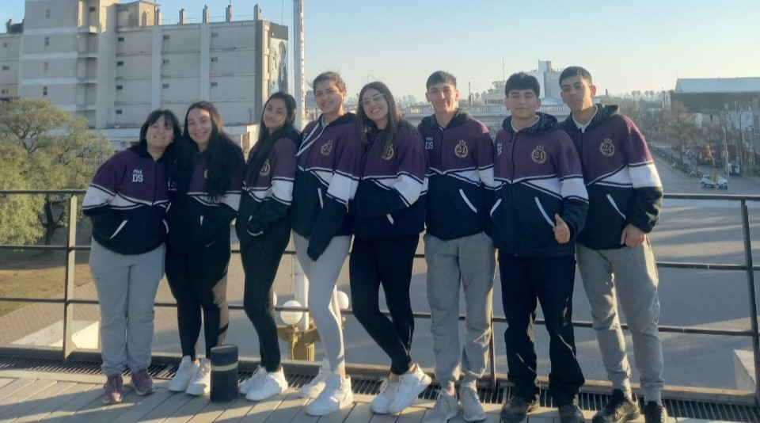
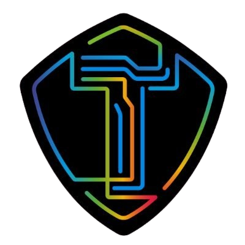

Periodo y duración
Las pasantías se desarrollarán desde el 14 de agosto hasta el 09 de septiembre de 2024. La duración y la carga horaria de las pasantías educativas se definió en el convenio individual por un plazo máximo de DOSCIENTAS HORAS (200), con no más de CUATRO (4) horas diarias de trabajo. Los estudiantes concurrieron de lunes a viernes de 8 a 12 hs. Por el período de 5 semanas consecutivas.
Actividades
1. Recorrido Tecnoteca
- Impresiones 3D
- Planetario
- Robótica
- FC 24 (FiFa)
- Edición de fotografía y fotografía con el celular
2. Mantenimiento de PC
3. Manejo de redes sociales
4. Desarrollo de Software
- Realizar una aplicación, registro de ingreso de personas (datos personales y para qué visita la tecnoteca)
5. Talleres
- Informática básica para adultos
- Uso del celular para adultos
- Tres Niveles
- Robótica para chicos
- Videojuegos
- Electricidad y Magnetismo

